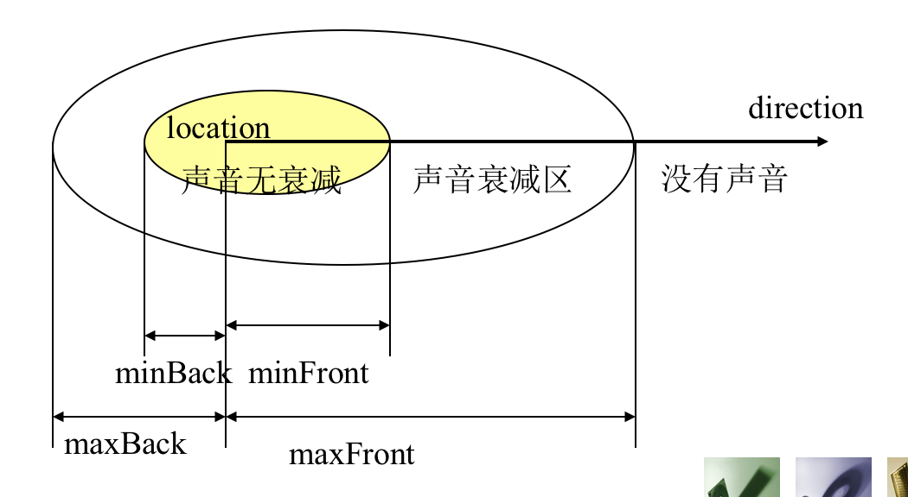

Background {
# 天体空间背景
skyColor [0.0 0.0 0.0]
skyAngle []
groundColor [0.0 0.0 0.0]
groundAngle []
# 全景空间背景
frontUrl
backUrl
leftUrl
rightUrl
topUrl
bottomUrl
set_bind # 入事件
isBound # 出事件
}
skyAngle:
- 正上方0度，正下方180度
- 第一个（0）省略，所以 skyColor 总比 skyAngle 多一个
- 省略180度的话，最后部分全部着色为最后一个颜色
- 必须升序排列
groundAngle:
- 正下方0度，正上方180度
- 如果不人为设置地面，默认只着色天空。
topUrl、bottomUrl 通常不设置背景图像，从而可以看到天空和地面。
【例】创建一个多色天空背景，由顶部的蓝色、中间的天蓝色到水平处的白色，形成一个颜色梯度变换的天空背景。
Background {
skyColor [
0 0 1
0 0 0.5
1 1 1
]
skyAngle [1.0 1.571]
groundColor [
0.1 0.1 0.1
0.4 0.3 0.2
0.8 0.8 0.8
]
groundAngle [1.0 1.571]
}
创建光照
浏览器自带光源：白色头灯光源 headlight Bool类型
NavigationInfo 中的域，可关闭，颜色不可改变
VRML 中可人工设置的三类光源：
- 点光源 PointLight
- 平行光源 DirectionalLight
- 锥光源 SpotLight（不考）
PointLight {
on TRUE
color 1.0 1.0 1.0
location 0.0 0.0 0.0
radius 100.0
intensity 1.0
ambientIntensity 0.0
attenuation 1.0 0.0 0.0
}
attenuation: 控制光线衰减
- 第一个值：是否光线恒定
- 第二个值：控制光线按线性方式衰减
- 第三个值：平方衰减
DirectionalLight {
on TRUE
direction 0.0 0.0 -1.0
intensity 1.0
color 1.0 1.0 1.0
}
【例】使用导航节点将系统默认的头灯关闭，在(0 0 1.5)的坐标位置上设置一个白色点光源，引入小球造型组（三行五列），并且与默认头灯照射的效果进行对比。
Transform { # 中间一列3个球
children [
DEF c Shape {
geometry Sphere {
radius 0.5
}
appearance Appearance {
material Material {
diffuseColor 1 1 0
}
}
}
Transform {
children [USE c]
translation 0 1.5 0
}
Transform {
children [USE c]
translation 0 -1.5 0
}
]
}
# 关闭默认头灯
NavigationInfo {
headlight FALSE
}
# 下面两种光源二选一
# 点光源
PointLight {
location 0 0 1.5
}
# 平行光源
DirectionalLight {
direction -1 0 0
}
创建雾化效果
注意：由 Background 节点设定的背景图像不会受雾的遮蔽效果的影响。
Fog {
color 1.0 1.0 1.0
fogType "LINEAR" # 浓度随观察距离增大而怎样增大，还有 "EXPONENTIAL"
visibilityRange 0.0 # 控制雾的浓度，值越小雾越大
set_bind
isBound
}
【例】创建一个雾化测试场景：平板底托上，由近往远错落排列6根金色圆柱。利用Fog节点增加雾化效果。改变其visibilityRange，观察6根圆柱的可见性。
Transform {
translation 0 -2 0
children [
Shape {
geometry Box {
size 25 0.2 25
}
appearance Appearance {
material Material {
diffuseColor 0.8 0.8 0.8
}
}
}
]
}
Transform {
children [
DEF cc Shape {
appearance Appearance {
material Material {
diffuseColor 1 1 0
}
}
geometry Cylinder {
height 4
radius 0.2
}
}
]
}
Transform {
translation -3 0 3
children [USE c]
}
Transform {
translation 3 0 3
children [USE c]
}
Transform {
translation 6 0 -6
children [USE c]
}
Transform {
translation 9 0 -9
children [USE c]
}
Transform {
translation 12 0 -12
children [USE c]
}
Background {
skyColor [1 1 1]
}
Fog {
fogType "EXPONENTIAL"
visibilityRange 20
}
创建观察视点和视点导航（重点）
Viewpoint {
position 0.0 0.0 10.0
orientation 0.0 0.0 1.0 0.0
fieldOfView 0.785398
jump TRUE
description ""
# 入事件
set_bind
# 出事件
isBound
bindTime
}
视点的切换方式：跳跃式、非跳跃式（平滑切换）
Viewpoint 设置观察视点
NavigationInfo 设置视点的移动方式
Viewpoint {
position 0 0 10
description "near"
}
Viewpoint {
position 0 0 20
description "far"
jump FALSE # 平滑切换
}
# 顶视图（俯视）
# 法1:
Viewpoint {
position 0 10 0
description "top"
orientation 1 0 0 -1.57
jump FALSE
}
# 法2: 套在 Transform 里，就不用设置 position 域了
Transform {
translation 0 10 0
children [
Viewpoint {
description "top"
orientation 1 0 0 -1.57
jump FALSE
}
]
}
在浏览器中使用右下角的一组按钮或者鼠标右键切换视点。
不重要：替身：
NavigationInfo {
headlight TRUE
type ["WALK" "ANY"]
avatarSize # 外表圆柱体的半径 高度 抬腿高度
# ...
}
创建音响效果
Sound 节点用于创建声场并设定声音播放方式。
创建声源的两个节点：
Sound {
source NULL
location 0 0 0
direction 0 0 1
intensity 1.0
maxBack 10.0
maxFront 10.0
minBack 1.0
minFront 1.0
}

AudioClip {
url []
description “”
loop FALSE
pitch 1.0 快速或慢速播放因子
startTime 0.0
stopTime 0.0
duration_changed
isActive
}
MovieTexture 见前文。